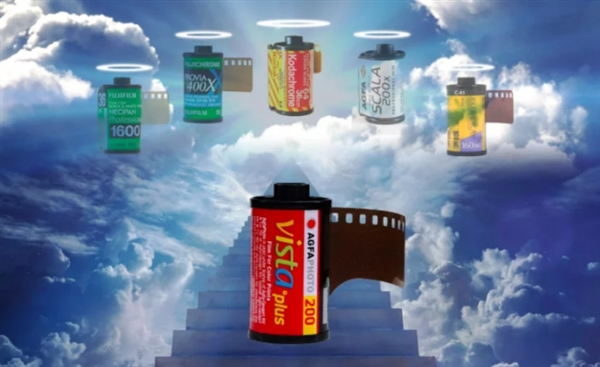

胶卷界最近有些事情要发生：很好用的Agfa Vista 400/200都要停产了。这两款Fuji代工的胶卷传出停产的消息我一点也不奇怪，因为Fuji每年按照惯例都会停产几款卖得挺火的胶卷。2017说是胶卷复兴元年，Kodak复产了Ektarchrome E100，还有一大票黑白卷冒了出来，可是Fuji逆势而行却停产了Natura 1600和provia 400x。大势所趋是没办法，这个世界永远都是利益驱动而不是情怀。胶卷确实已经是过时的产物，大概再往后就没有玩胶卷的人了，我们大概是最后一代玩胶卷的孩子了。
前阵子在微信公众号里面发现《大众软件》还活着，遂好奇在网上搜索了一下这个十多年前很风光的游戏杂志的现状。《大众软件》在16年停刊之后曾经出过一次众筹，说要“让每个人都有一本大软”，但是最后众筹做出来的效果确实不如人意。
胶卷和纸媒这两样在以前看似没有关联的东西，在如今已经被冠以“过时”的称呼。胶卷大概在千禧年前后最为火热，之后就一直走下坡路了。而纸媒，我记得小学初中的时候经常买的杂志《数码时代》、《大众软件》、《电脑迷》等，早已经在几年前没有踪影了。看来这两样东西已经被时代远远抛在后头了。
Kodak发明了数码相机，最后自己却被数码相机干死；《数码时代》杂志整天讲数码产品，最后自己被互联网干死。这个虚拟的数字时代到来之后，一切都便利了很多：我不用花钱买胶卷，花时间等洗胶卷；我不用花钱买一个月才出一期的杂志。但是我总觉得我不属于这个数码时代，我可是一个有情怀的人。
